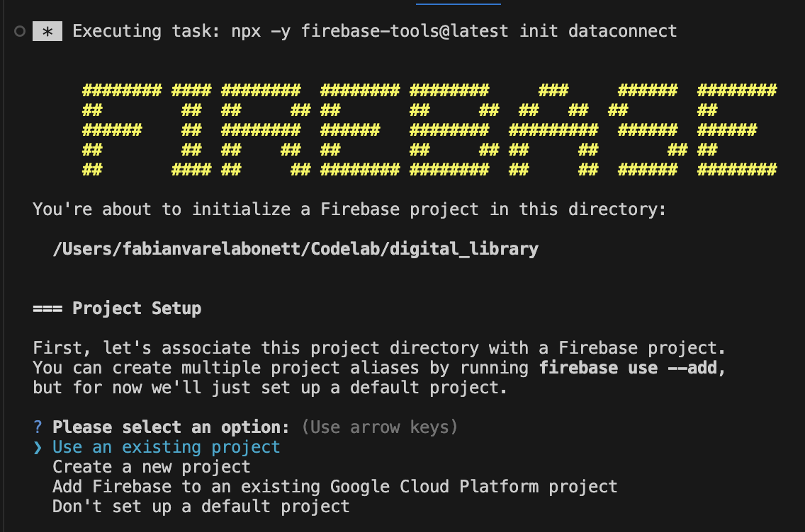

Al finalizar este taller, serás capaz de:
Como reto....
Este crédito solo aplica para este taller. Para acceder, ingresa aquí
Para Mac/windows con Powershell.
# Instalar VGV CLI
dart pub global activate very_good_cli
# Crear proyecto Flutter con VGV CLI
very_good create flutter_app digital_library --desc "My custom library app" --application-id "com.digital_library.app"
# Ir al directorio del proyecto
cd digital_library
Para Mac.
# Instalar Firebase CLI
sudo npm install -g firebase-tools
# Instalar el tools de Firebase Data Connect.
curl -sL https://firebase.tools/dataconnect | bash
# Iniciar sesión en Firebase
firebase login
# Agregar el paquete global de FlutterFire CLI.
dart pub global activate flutterfire_cli
Para Windows con Powershell.
# Instalar Firebase CLI
npm install -g firebase-tools
# Configurar Firebase
firebase login
Agrega los siguientes paquetes en el archivo pubspec.yaml. Agregalos en orden alfábetico
cached_network_image: ^3.4.1
dio: ^5.9.0
firebase_app_check: ^0.4.0+1
firebase_core: ^4.1.0
firebase_data_connect: ^0.2.0+2
Revisa en la consola de Firebase en el botón de settings.
Y ve a donde dice, Configuración del proyecto. Luego revisa el Id del proyecto y copialo.
Luego de instalar la extensión, busca el ícono de la extensión
Inicia sesión (si no lo has hecho) e inicializa data connect.
Al darle clic al botón, te mostrará en la terminal lo siguiente:

Selecciona la opción: Use an existing project. Después, selecciona el proyecto ya creado con el nombre digital-library
Primero, la consola te mostrará que generes un esquema con Gemini. Omite esa opción.
Segundo, selecciona el location, por defecto es us-central1.
Tercero, el crerará las inatancias de Cloud SQL, mediante GCP. Además creará un esquema de ejemplo.
Finalmente, te mostrará en la extensión, que ha sido creado todo con éxtio.
Es posible que al iniciar data connect, te haya creado unos archivos gql y dart de ejemplo, así que vamos a hacer los siguientes pasos.
lib/dataconnect_generateddataconnect/dataconnect.yaml, modifica example, por digital_library.dataconnect/digital_library/connector.yaml, reemplaza lo siguiente:connectorId: digital-library
generate:
dartSdk:
- outputDir: ../../lib/digital_library_generated
package: digital_library_generated
Ve al archivo dataconnect/schema/schema.gql:
Elimina el contenido de ejemplo y agrega el esquema de la tabla de Book.
type Book @table {
id: UUID! @default(expr: "uuidV4()")
title: String!
author: String!
isbn: String @unique
genre: [String!]!
synopsis: String
publicationYear: Int
pages: Int
rating: Float @default(value: 0.0)
coverUrl: String
createdAt: Timestamp! @default(expr: "request.time")
updatedAt: Timestamp! @default(expr: "request.time")
}
Después, agrega el esquema de la tabla de Users.
type User @table {
id: UUID! @default(expr: "uuidV4()")
name: String!
email: String! @unique
createdAt: Timestamp! @default(expr: "request.time")
}
Finalmente, agrega el esquema de la tabla de ReadingList.
type ReadingList @table {
id: UUID! @default(expr: "uuidV4()")
userId: UUID!
bookId: UUID!
status: String! # "want_to_read", "reading", "completed"
dateAdded: Timestamp! @default(expr: "request.time")
user: User! @ref(fields: "userId", references: "id")
book: Book! @ref(fields: "bookId", references: "id")
}
Ve al archivo dataconnect/digital_library/queries.gql:
Elimina el contenido de ejemplo y agrega el query para obtener todos los libros.
query GetAllBooks @auth(level: PUBLIC) {
books {
id
title
author
genre
synopsis
publicationYear
rating
coverUrl
}
}
Luego agrega el query para buscar por título o autor.
query SearchBooks($searchTerm: String!) @auth(level: PUBLIC) {
books(
where: {
_or: [
{ title: { contains: $searchTerm } }
{ author: { contains: $searchTerm } }
]
}
) {
id
title
author
genre
synopsis
rating
coverUrl
}
}
Ahora, agrega el query para buscar por género literario.
query GetBooksByGenre($genre: String!) @auth(level: PUBLIC) {
books(where: { genre: { includes: $genre } }) {
id
title
author
genre
synopsis
rating
coverUrl
}
}
Finalmente agrega el query para buscar los libros por usuario.
query GetUserReadingList($userId: UUID!) @auth(level: PUBLIC) {
readingLists(where: { userId: { eq: $userId } }) {
id
status
dateAdded
book {
id
title
author
coverUrl
rating
}
}
}
Ve al archivo dataconnect/digital_library/mutations.gql:
Elimina el contenido de ejemplo y agrega el mutation para agregar un libro.
mutation AddBook(
$title: String!
$author: String!
$isbn: String
$genre: [String!]!
$synopsis: String
$publicationYear: Int
$pages: Int
$coverUrl: String
) @auth(level: PUBLIC) {
book_insert(
data: {
title: $title
author: $author
isbn: $isbn
genre: $genre
synopsis: $synopsis
publicationYear: $publicationYear
pages: $pages
coverUrl: $coverUrl
}
)
}
Luego agrega el mutation para agregar el usuario.
mutation CreateUser($name: String!, $email: String!) @auth(level: PUBLIC) {
user_insert(data: { name: $name, email: $email })
}
Después, agrega el mutation para agregar la lista de lectura.
mutation AddToReadingList($userId: UUID!, $bookId: UUID!, $status: String!) @auth(level: PUBLIC) {
readingList_insert(
data: { userId: $userId, bookId: $bookId, status: $status }
)
}
Y finalmente agrega el mutation para poder actualizar el status de la lectura.
mutation UpdateReadingStatus($readingListId: UUID!, $status: String!) @auth(level: PUBLIC) {
readingList_update(id: $readingListId, data: { status: $status })
}
Después de que todo esté listo, debes ejecutar el siguiente comando:
firebase deploy --only dataconnect
Este paso solo es si no genera los archivos dart requeridos. Solo debes ejecutar el siguiente comando
firebase dataconnect:sdk:generate
Ejecuta este comando en la raíz del proyecto y reemplaza YOUR_PROJECT_ID por el Id de tu proyecto.
flutterfire config --project=<YOUR_PROJECT_ID> \
--ios-bundle-id=com.digitalLibrary.app \
--android-package-name=com.digital_library.app \
--macos-bundle-id=com.digitalLibrary.app
En el proyecto ya creado con VGV CLI, abre el archivo lib/bootstrap.dart y agrega lo siguiente.
import 'package:flutter/material.dart';
import 'package:firebase_core/firebase_core.dart';
import 'package:firebase_data_connect/firebase_data_connect.dart';
import 'firebase_options.dart';
Future<void> bootstrap(FutureOr<Widget> Function() builder) async {
// FlutterError...
WidgetsFlutterBinding.ensureInitialized();
await Firebase.initializeApp(
options: DefaultFirebaseOptions.currentPlatform,
);
// Esto es para poder ejecutar nuestra app no registrada en Firebase en debug.
await FirebaseAppCheck.instance.activate(
appleProvider: AppleProvider.debug,
androidProvider: AndroidProvider.debug,
);
// runApp...
}
Ahora debes configurar AppCheck en Firebase con las aplicaciones ya registradas. Sigue el siguiente paso a paso aquí
Es posible que los archivos generados en la carpeta lib/digital_library_generated salgan algunos errores. Para solucionarlo de la forma rápida (no recomendable), debes agregar esto en el archivo de analysis_options.yaml.
analyzer:
exclude:
- lib/l10n/gen/*
- lib/**_generated/*
Crear el siguiente archivo home/view/home_page.dart y agregar lo siguiente.
import 'package:digital_library/digital_library_generated/digital_library.dart';
import 'package:flutter/material.dart';
class HomeScreen extends StatefulWidget {
const HomeScreen({super.key});
@override
State<HomeScreen> createState() => _HomeScreenState();
}
class _HomeScreenState extends State<HomeScreen> {
final TextEditingController _searchController = TextEditingController();
List<Map<String, dynamic>> books = [];
String selectedGenre = 'Todos';
@override
void initState() {
super.initState();
_loadBooks();
}
Future<void> _loadBooks() async {
final result = await DigitalLibraryConnector.instance
.getAllBooks()
.execute();
setState(() => books = result.data.books.map((e) => e.toJson()).toList());
}
Future<void> _searchBooks() async {
if (_searchController.text.isNotEmpty) {
final result = await DigitalLibraryConnector.instance
.searchBooks(searchTerm: _searchController.text)
.execute();
setState(() => books = result.data.books.map((e) => e.toJson()).toList());
} else {
await _loadBooks();
}
}
Future<void> _filterByGenre(String genre) async {
if (genre == 'Todos') {
await _loadBooks();
} else {
final result = await DigitalLibraryConnector.instance
.getBooksByGenre(genre: genre)
.execute();
setState(() {
books = result.data.books.map((e) => e.toJson()).toList();
selectedGenre = genre;
});
}
}
@override
Widget build(BuildContext context) {
return Scaffold(
appBar: AppBar(
title: const Text('Digital Library'),
backgroundColor: Theme.of(context).colorScheme.inversePrimary,
),
body: Column(
children: <Widget>[
Padding(
padding: const EdgeInsets.all(16),
child: TextField(
controller: _searchController,
decoration: InputDecoration(
hintText: 'Buscar por título o autor...',
prefixIcon: const Icon(Icons.search),
border: OutlineInputBorder(
borderRadius: BorderRadius.circular(10),
),
suffixIcon: IconButton(
icon: const Icon(Icons.clear),
onPressed: () {
_searchController.clear();
_loadBooks();
},
),
),
onSubmitted: (_) => _searchBooks(),
),
),
SizedBox(
height: 50,
child: ListView(
scrollDirection: Axis.horizontal,
padding: const EdgeInsets.symmetric(horizontal: 16),
children:
[
'Todos',
'Ficción',
'No Ficción',
'Ciencia',
'Historia',
'Biografía',
]
.map(
(genre) => Padding(
padding: const EdgeInsets.only(right: 8),
child: FilterChip(
label: Text(genre),
selected: selectedGenre == genre,
onSelected: (_) => _filterByGenre(genre),
),
),
)
.toList(),
),
),
Expanded(
child: books.isEmpty
? Center(
child: Column(
mainAxisAlignment: MainAxisAlignment.center,
children: [
const Icon(Icons.book, size: 64, color: Colors.grey),
const Text(
'No hay libros en tu biblioteca',
style: TextStyle(fontSize: 18, color: Colors.grey),
),
const SizedBox(height: 16),
ElevatedButton.icon(
onPressed: () => Navigator.push(
context,
MaterialPageRoute<void>(
builder: (context) => AddBookScreen(),
),
).then((_) => _loadBooks()),
icon: const Icon(Icons.add),
label: const Text('Agregar primer libro'),
),
],
),
)
: ListView.builder(
itemCount: books.length,
itemBuilder: (context, index) {
final book = books[index];
return Card(
margin: const EdgeInsets.all(8),
child: ListTile(
leading: book['coverUrl'] != null
? ClipRRect(
borderRadius: BorderRadius.circular(4),
child: Image.network(
book['coverUrl'] as String,
width: 50,
height: 70,
fit: BoxFit.cover,
errorBuilder:
(context, error, stackTrace) =>
const Icon(Icons.book, size: 50),
),
)
: const Icon(Icons.book, size: 50),
title: Text(
book['title'] as String,
style: const TextStyle(fontWeight: FontWeight.bold),
),
subtitle: Column(
crossAxisAlignment: CrossAxisAlignment.start,
children: [
Text('Por: ${book['author']}'),
if (book['genre'] != null &&
(book['genre'] as List<String>).isNotEmpty)
Text(
'Géneros: ${(book['genre'] as List<String>).join(', ')}',
style: TextStyle(
fontSize: 12,
color: Colors.grey[600],
),
),
if (book['rating'] != null &&
(book['rating'] as double) > 0)
Row(
children: [
const Icon(
Icons.star,
size: 16,
color: Colors.amber,
),
Text(
' ${(book['rating'] as double).toStringAsFixed(1)}',
),
],
),
],
),
isThreeLine: true,
),
);
},
),
),
],
),
floatingActionButton: FloatingActionButton(
onPressed: () => Navigator.push(
context,
MaterialPageRoute<void>(builder: (context) => AddBookScreen()),
).then((_) => _loadBooks()),
child: const Icon(Icons.add),
),
);
}
@override
void dispose() {
_searchController.dispose();
super.dispose();
}
}
NOTA: Si mejoran el código, usando un state management como Bloc/Riverpod, es punto adicional.
Crear el siguiente archivo home/view/add_book_page.dart y agregar lo siguiente.
import 'package:digital_library/digital_library_generated/digital_library.dart';
import 'package:flutter/material.dart';
class AddBookScreen extends StatefulWidget {
const AddBookScreen({super.key});
@override
State<AddBookScreen> createState() => _AddBookScreenState();
}
class _AddBookScreenState extends State<AddBookScreen> {
final _formKey = GlobalKey<FormState>();
final _titleController = TextEditingController();
final _authorController = TextEditingController();
final _isbnController = TextEditingController();
final _synopsisController = TextEditingController();
final _yearController = TextEditingController();
final _pagesController = TextEditingController();
final _coverUrlController = TextEditingController();
List<String> selectedGenres = [];
final List<String> availableGenres = [
'Ficción',
'No Ficción',
'Ciencia',
'Historia',
'Biografía',
'Fantasía',
'Romance',
'Misterio',
'Thriller',
'Ciencia Ficción',
'Autoayuda',
'Tecnología',
'Arte',
'Cocina',
'Viajes',
];
bool isLoading = false;
Future<void> _saveBook() async {
if (_formKey.currentState!.validate() && selectedGenres.isNotEmpty) {
try {
setState(() => isLoading = true);
await DigitalLibraryConnector.instance
.addBook(
title: _titleController.text.trim(),
author: _authorController.text.trim(),
genre: selectedGenres,
)
.isbn(
_isbnController.text.trim().isEmpty
? null
: _isbnController.text.trim(),
)
.synopsis(
_synopsisController.text.trim().isEmpty
? null
: _synopsisController.text.trim(),
)
.publicationYear(
_yearController.text.trim().isEmpty
? null
: int.tryParse(_yearController.text.trim()),
)
.pages(
_pagesController.text.trim().isEmpty
? null
: int.tryParse(_pagesController.text.trim()),
)
.coverUrl(
_coverUrlController.text.trim().isEmpty
? null
: _coverUrlController.text.trim(),
)
.execute();
setState(() => isLoading = false);
_showMessage('Libro agregado exitosamente');
if (mounted) Navigator.pop(context);
} on Exception catch (_) {
_showMessage('Error al agregar el libro');
}
} else if (selectedGenres.isEmpty) {
_showMessage('Selecciona al menos un género');
}
}
@override
Widget build(BuildContext context) {
return Scaffold(
appBar: AppBar(
title: const Text('Agregar Libro'),
backgroundColor: Theme.of(context).colorScheme.inversePrimary,
),
body: Form(
key: _formKey,
child: ListView(
padding: const EdgeInsets.all(16),
children: <Widget>[
TextFormField(
controller: _titleController,
decoration: const InputDecoration(
labelText: 'Título *',
border: OutlineInputBorder(),
),
validator: (value) {
if (value == null || value.trim().isEmpty) {
return 'El título es requerido';
}
return null;
},
),
const SizedBox(height: 16),
TextFormField(
controller: _authorController,
decoration: const InputDecoration(
labelText: 'Autor *',
border: OutlineInputBorder(),
),
validator: (value) {
if (value == null || value.trim().isEmpty) {
return 'El autor es requerido';
}
return null;
},
),
const SizedBox(height: 16),
TextFormField(
controller: _isbnController,
decoration: const InputDecoration(
labelText: 'ISBN (opcional)',
border: OutlineInputBorder(),
),
),
const SizedBox(height: 16),
const Text(
'Géneros *',
style: TextStyle(fontSize: 16, fontWeight: FontWeight.w500),
),
const SizedBox(height: 8),
Wrap(
spacing: 8,
children: availableGenres.map((genre) {
return FilterChip(
label: Text(genre),
selected: selectedGenres.contains(genre),
onSelected: (selected) {
setState(() {
if (selected) {
selectedGenres.add(genre);
} else {
selectedGenres.remove(genre);
}
});
},
);
}).toList(),
),
const SizedBox(height: 16),
TextFormField(
controller: _synopsisController,
decoration: const InputDecoration(
labelText: 'Sinopsis (opcional)',
border: OutlineInputBorder(),
),
maxLines: 3,
),
const SizedBox(height: 16),
Row(
children: <Widget>[
Expanded(
child: TextFormField(
controller: _yearController,
decoration: const InputDecoration(
labelText: 'Año publicación',
border: OutlineInputBorder(),
),
keyboardType: TextInputType.number,
),
),
const SizedBox(width: 16),
Expanded(
child: TextFormField(
controller: _pagesController,
decoration: const InputDecoration(
labelText: 'Páginas',
border: OutlineInputBorder(),
),
keyboardType: TextInputType.number,
),
),
],
),
const SizedBox(height: 16),
TextFormField(
controller: _coverUrlController,
decoration: const InputDecoration(
labelText: 'URL de portada (opcional)',
border: OutlineInputBorder(),
),
),
const SizedBox(height: 32),
SizedBox(
height: 50,
child: ElevatedButton(
onPressed: isLoading ? null : _saveBook,
child: isLoading
? const CircularProgressIndicator()
: const Text(
'Guardar Libro',
style: TextStyle(fontSize: 16),
),
),
),
],
),
),
);
}
void _showMessage(String message) {
ScaffoldMessenger.of(context).showSnackBar(
SnackBar(content: Text(message)),
);
}
@override
void dispose() {
_titleController.dispose();
_authorController.dispose();
_isbnController.dispose();
_synopsisController.dispose();
_yearController.dispose();
_pagesController.dispose();
_coverUrlController.dispose();
super.dispose();
}
}
NOTA: Si mejoran el código, usando un state management como Bloc/Riverpod, es punto adicional.
En el archivo lib/app/view/app.dart, cambia el home por la nueva pantalla de inicio.
return MaterialApp(
// ...
home: const HomeScreen(),
);
Agregar la siguiente mutation, en el archivo dataconnect/digital_library/mutations.gql.
mutation AddBook(
$title: String!
$author: String!
$isbn: String
$genre: [String!]!
$synopsis: String
$publicationYear: Int
$pages: Int
$coverUrl: String
) @auth(level: NO_ACCESS) {
book_insert(
data: {
title: $title
author: $author
isbn: $isbn
genre: $genre
synopsis: $synopsis
publicationYear: $publicationYear
pages: $pages
coverUrl: $coverUrl
}
)
}
mutation CreateUser($name: String!, $email: String!) {
user_insert(data: { name: $name, email: $email })
}
mutation AddToReadingList($userId: UUID!, $bookId: UUID!, $status: String!) {
readingList_insert(
data: { userId: $userId, bookId: $bookId, status: $status }
)
}
mutation UpdateReadingStatus($readingListId: UUID!, $status: String!) {
readingList_update(id: $readingListId, data: { status: $status })
}
mutation SeedBooks {
book_insertMany(
data: [
{
title: "Cien años de soledad"
author: "Gabriel García Márquez"
isbn: "9780060883287"
genre: ["Ficción", "Realismo Mágico"]
synopsis: "La épica historia de la familia Buendía a lo largo de siete generaciones en el pueblo ficticio de Macondo."
publicationYear: 1967
pages: 417
rating: 4.8
coverUrl: "https: //images-na.ssl-images-amazon.com/images/I/91TvVQS7loL.jpg"
}
{
title: "Dune"
author: "Frank Herbert"
isbn: "9780441172719"
genre: ["Ciencia Ficción", "Aventura"]
synopsis: "Una épica historia sobre política, religión y ecología en el desierto planeta Arrakis, donde la especia melange es el recurso más valioso del universo."
publicationYear: 1965
pages: 688
rating: 4.5
coverUrl: "https: //images-na.ssl-images-amazon.com/images/I/81zN7udGRUL.jpg"
}
{
title: "1984"
author: "George Orwell"
isbn: "9780451524935"
genre: ["Ficción", "Distopía"]
synopsis: "Una novela distópica sobre el totalitarismo y la vigilancia gubernamental en una sociedad donde el Gran Hermano lo ve todo."
publicationYear: 1949
pages: 328
rating: 4.7
coverUrl: "https: //images-na.ssl-images-amazon.com/images/I/71kxa1-0mfL.jpg"
}
{
title: "El Alquimista"
author: "Paulo Coelho"
isbn: "9780061122415"
genre: ["Ficción", "Autoayuda"]
synopsis: "La historia de Santiago, un joven pastor andaluz que viaja desde España hasta las pirámides de Egipto en busca de un tesoro."
publicationYear: 1988
pages: 163
rating: 4.2
coverUrl: "https: //images-na.ssl-images-amazon.com/images/I/71aFt4+OTOL.jpg"
}
{
title: "Sapiens: De animales a dioses"
author: "Yuval Noah Harari"
isbn: "9780062316097"
genre: ["No Ficción", "Historia"]
synopsis: "Una exploración fascinante de la historia de la humanidad, desde la evolución hasta los desafíos del siglo XXI."
publicationYear: 2011
pages: 443
rating: 4.6
coverUrl: "https: //images-na.ssl-images-amazon.com/images/I/713jIoMO3UL.jpg"
}
{
title: "El Código Da Vinci"
author: "Dan Brown"
isbn: "9780307474278"
genre: ["Misterio", "Thriller"]
synopsis: "Robert Langdon se ve envuelto en un misterio que involucra sociedades secretas, arte renacentista y conspiraciones religiosas."
publicationYear: 2003
pages: 454
rating: 4.1
coverUrl: "https: //images-na.ssl-images-amazon.com/images/I/815WORuYMML.jpg"
}
{
title: "Steve Jobs"
author: "Walter Isaacson"
isbn: "9781451648539"
genre: ["Biografía", "Tecnología"]
synopsis: "La biografía autorizada del cofundador de Apple, basada en más de cuarenta entrevistas con Jobs y más de cien con familiares, amigos y colegas."
publicationYear: 2011
pages: 656
rating: 4.4
coverUrl: "https: //images-na.ssl-images-amazon.com/images/I/81VStYnDGrL.jpg"
}
{
title: "El Señor de los Anillos: La Comunidad del Anillo"
author: "J.R.R. Tolkien"
isbn: "9780547928210"
genre: ["Fantasía", "Aventura"]
synopsis: "Frodo Bolsón hereda un anillo mágico de su tío Bilbo y debe emprender un peligroso viaje para destruirlo."
publicationYear: 1954
pages: 423
rating: 4.9
coverUrl: "https: //images-na.ssl-images-amazon.com/images/I/91jBdG2aHML.jpg"
}
{
title: "Orgullo y Prejuicio"
author: "Jane Austen"
isbn: "9780141439518"
genre: ["Romance", "Ficción"]
synopsis: "La compleja relación entre Elizabeth Bennet y el orgulloso Sr. Darcy en la Inglaterra del siglo XIX."
publicationYear: 1813
pages: 279
rating: 4.3
coverUrl: "https: //images-na.ssl-images-amazon.com/images/I/81NLDvyAHrL.jpg"
}
{
title: "Hábitos Atómicos"
author: "James Clear"
isbn: "9780735211292"
genre: ["Autoayuda", "Productividad"]
synopsis: "Un método revolucionario para crear buenos hábitos y eliminar los malos, basado en los últimos descubrimientos de la neurociencia."
publicationYear: 2018
pages: 320
rating: 4.7
coverUrl: "https: //images-na.ssl-images-amazon.com/images/I/81YkqyaFVEL.jpg"
}
{
title: "El Arte de la Guerra"
author: "Sun Tzu"
isbn: "9781599869773"
genre: ["Filosofía", "Estrategia"]
synopsis: "El tratado militar más influyente del mundo, aplicable tanto en la guerra como en los negocios y la vida cotidiana."
publicationYear: -500
pages: 96
rating: 4.0
coverUrl: "https: //images-na.ssl-images-amazon.com/images/I/81L-MkU8S-L.jpg"
}
{
title: "Piensa y Hazte Rico"
author: "Napoleon Hill"
isbn: "9781585424331"
genre: ["Autoayuda", "Negocios"]
synopsis: "Los principios del éxito basados en el estudio de más de 500 millonarios de la época, incluyendo Andrew Carnegie."
publicationYear: 1937
pages: 320
rating: 4.2
coverUrl: "https: //images-na.ssl-images-amazon.com/images/I/71UypkUjStL.jpg"
}
{
title: "El Hobbit"
author: "J.R.R. Tolkien"
isbn: "9780547928227"
genre: ["Fantasía", "Aventura"]
synopsis: "Bilbo Bolsón se embarca en una aventura épica con trece enanos para recuperar el tesoro guardado por el dragón Smaug."
publicationYear: 1937
pages: 366
rating: 4.6
coverUrl: "https: //images-na.ssl-images-amazon.com/images/I/A1E1w1jwApL.jpg"
}
{
title: "Matar a un ruiseñor"
author: "Harper Lee"
isbn: "9780060935467"
genre: ["Ficción", "Drama"]
synopsis: "Scout Finch narra la historia de su infancia en Alabama, cuando su padre defiende a un hombre negro acusado injustamente."
publicationYear: 1960
pages: 376
rating: 4.8
coverUrl: "https: //images-na.ssl-images-amazon.com/images/I/81aY1lxk+9L.jpg"
}
{
title: "La Chica del Tren"
author: "Paula Hawkins"
isbn: "9781594634024"
genre: ["Thriller", "Misterio"]
synopsis: "Rachel toma el mismo tren todos los días y observa la misma casa. Un día es testigo de algo impactante que cambia vidas para siempre."
publicationYear: 2015
pages: 325
rating: 3.9
coverUrl: "https: //images-na.ssl-images-amazon.com/images/I/81a4E0hAanL.jpg"
}
{
title: "El Poder del Ahora"
author: "Eckhart Tolle"
isbn: "9781577314806"
genre: ["Autoayuda", "Espiritualidad"]
synopsis: "Una guía para la transformación espiritual que enseña cómo vivir en el momento presente y encontrar la paz interior."
publicationYear: 1997
pages: 236
rating: 4.3
coverUrl: "https: //images-na.ssl-images-amazon.com/images/I/71QKQ9mwV7L.jpg"
}
{
title: "Inteligencia Emocional"
author: "Daniel Goleman"
isbn: "9780553383713"
genre: ["Psicología", "Autoayuda"]
synopsis: "Una exploración revolucionaria de cómo la inteligencia emocional puede ser más importante que el CI para el éxito en la vida."
publicationYear: 1995
pages: 352
rating: 4.1
coverUrl: "https: //images-na.ssl-images-amazon.com/images/I/71aG+xDKSYL.jpg"
}
{
title: "El Padrino"
author: "Mario Puzo"
isbn: "9780451205766"
genre: ["Ficción", "Crimen"]
synopsis: "La saga épica de la familia Corleone y su imperio criminal en Nueva York desde 1945 hasta 1955."
publicationYear: 1969
pages: 448
rating: 4.4
coverUrl: "https: //images-na.ssl-images-amazon.com/images/I/81F90PyxBlL.jpg"
}
{
title: "El Gran Gatsby"
author: "F. Scott Fitzgerald"
isbn: "9780743273565"
genre: ["Ficción", "Drama"]
synopsis: "La historia de Jay Gatsby y su obsesivo amor por Daisy Buchanan en los locos años veinte."
publicationYear: 1925
pages: 180
rating: 4.2
coverUrl: "https: //images-na.ssl-images-amazon.com/images/I/81af+MCATTL.jpg"
}
{
title: "El Monje que Vendió su Ferrari"
author: "Robin Sharma"
isbn: "9780062515674"
genre: ["Autoayuda", "Ficción"]
synopsis: "Un abogado exitoso abandona su vida de lujos para buscar la felicidad y el propósito en los Himalayas."
publicationYear: 1997
pages: 198
rating: 4.0
coverUrl: "https: //images-na.ssl-images-amazon.com/images/I/71BankcKkQL.jpg"
}
]
)
}
AppBar de HomeScreen un menú para hacer el seedreturn Scaffold(
appBar: AppBar(
title: Text('Digital Library'),
backgroundColor: Theme.of(context).colorScheme.inversePrimary,
actions: <Widget>[
IconButton(
onPressed: () async {
await DigitalLibraryConnector.instance.seedBooks().execute();
await _loadBooks();
},
icon: const Icon(Icons.download),
tooltip: 'Poblar Base de Datos',
),
],
),
// ...
);
Crear un sistema de biblioteca inteligente con múltiples funcionalidades de IA que demuestre el verdadero potencial de Firebase Data Connect. Aquí te dejo en cada nivel unas ayudas para habilitar o usar vectores en tu búsqueda.
Funcionalidad básica con vectores
Implementar búsqueda semántica que entienda intenciones:
Para este nivel necesitas usar vectores y embeddings, te dejo una definición de embeddings aqui
CREATE EXTENSION vector;
Ve al archivo dataconnect/scheme/scheme.gql y agrega lo siguiente:
type Book @table {
# ... campos existentes ...
synopsisEmbedding: Vector @col(size:3072)
searchContent: String
}
Luego ve al archivo dataconnect/digital_library/queries.gql y agrega el siguiente query:
query SemanticSearch($query: String!, $limit: Int = 8) @auth(level: PUBLIC) {
books_synopsisEmbedding_similarity(
compare_embed: {model: "gemini-embedding-001", text: $query},
method: COSINE,
limit: $limit
) {
id
title
author
synopsis
genre
rating
coverUrl
_metadata {
distance
}
}
}
Ahora en el archivo dataconnect/digital_library/mutations.gql, agrega lo siguiente en el mutation existente:
mutation AddBook(
# paramétros existenes ...
$synopsis: String! # Vuelvelo requerido
# paramétros existenes ...
) @auth(level: PUBLIC) {
book_insert(
data: {
# campos existentes ...
synopsisEmbedding_embed: {model: "gemini-embedding-001", text: $synopsis}
}
)
}
Agrega un mutation para editar y borrar cada libro. Debes implementar en Flutter en cada elemento de la lista para que borre un item.
mutation UpdateBook($id: UUID!, $synopsis: String!) @auth(level: PUBLIC) {
book_update(
id: $id
data: {
synopsis: $synopsis
synopsisEmbedding_embed: {
model: "gemini-embedding-001"
text: $synopsis
}
}
)
}
mutation DeleteMovie($id: UUID!) @auth(level: PUBLIC) {
book_delete(id: $id)
}
Si no se ven los cambios automáticamente, ejecuta.
firebase dataconnect:sdk:generate
Y luego para desplegar los cambios
firebase deploy --only dataconnect
Sistema de recomendaciones inteligente
Crear un asistente que analiza el perfil del usuario y recomienda libros personalizados usando Gemini.
NOTA: Este es opcional, puedes hacerlo para mejorar tus skills o incluso para poder ganar el trofeo con más ventaja.
Has completado exitosamente el taller completo de Firebase Data Connect + Flutter. Además de agregar funcionalidades con IA. Ahora tienes las bases para: